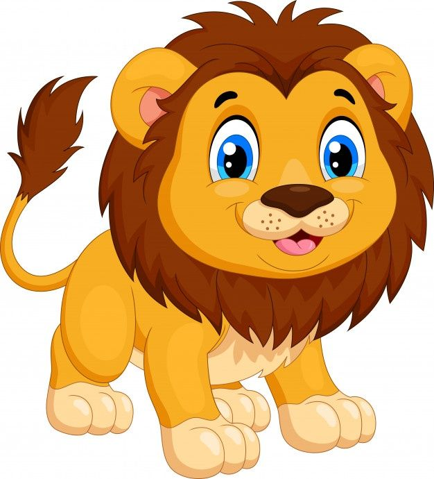

Claro, aquí tienes una breve información sobre los tigres para niños:
Los tigres son grandes felinos que pertenecen a la familia de los grandes gatos. Son los más grandes del mundo después de los leones. Tienen un pelaje de color naranja con rayas negras que les sirve como camuflaje en la selva.

León
El león es uno de los grandes felinos más imponentes. Es conocido como el "rey de la selva" por su majestuosa melena que solo tienen los machos.
Los leones son los únicos grandes gatos que viven y cazan en grupo, llamado manada o pride en inglés. La manada está formada por leones emparentados, liderados por un león macho dominante.
Gato
Los gatos domésticos son pequeños felinos que viven con las personas en sus casas como mascotas. Descienden de los gatos salvajes pero han sido domesticados por el ser humano desde hace miles de años